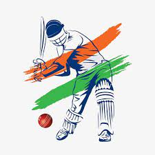
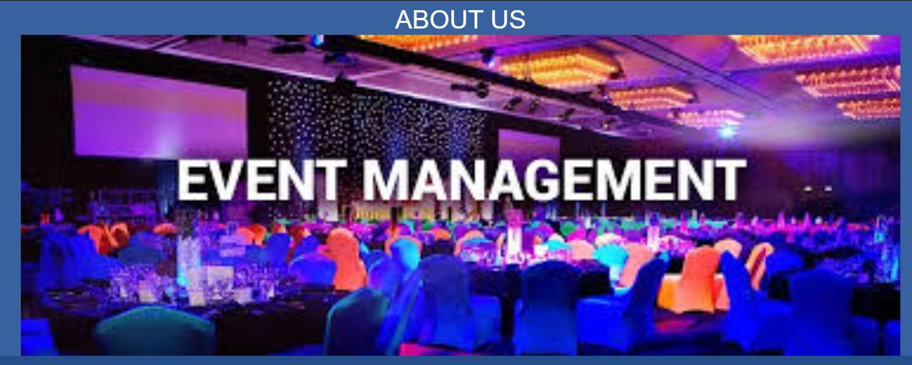

Project
- 
cricket website
In this website I have included cricket information,worlds different beautifull grounds information, legendary hall of fames career and their personal information and list of winners (which team has won more world cup)
Skills
HTML
CSS
JavaScript
-
wordprees website
In this website I have included different event management photos,what is event management, how we plan different events,I have created one google maps which shows where our office is located and there is contact page.
Skills
wordpress
- 
php project:event management
So,This website is all about event management,first the user has to login and then the user can book their different event halls, they can give dates(how many days they want the hall), user can delete or update the dates of booking.
Skills
PHP
SQL Queries